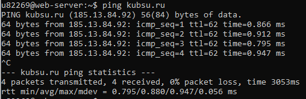
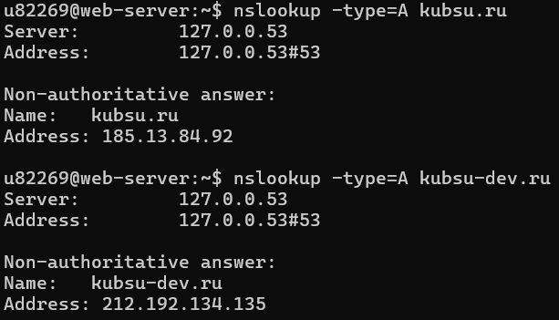
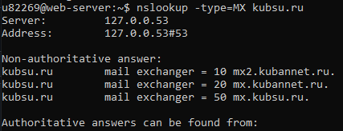
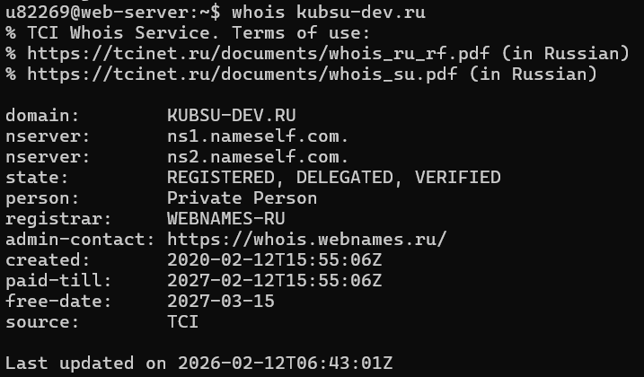
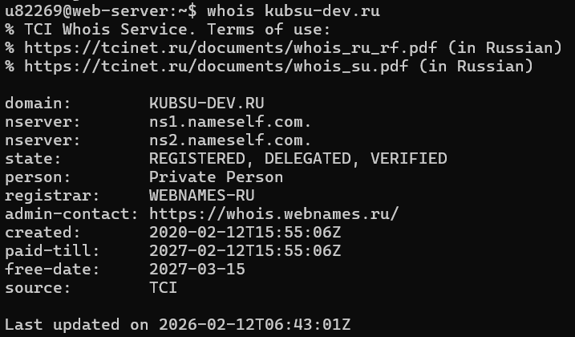
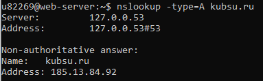

С помощью команды ping на учебном сервере узнать IP-адрес веб-сервера kubsu.ru

С помощью команды nslookup узнать A-записи и MX-записи домена kubsu.ru и kubsu-dev.ru


С помощью команды whois узнать дату регистрации домена kubsu.ru и kubsu-dev.ru
 

С помощью программы FileZilla или любого другого клиента SFTP соединиться с учебным сервером с вашим логином и паролем по протоколу SFTP и скопировать на локальный компьютер файлы задания из каталога www. Сделать скриншот SFTP-клиента после скачивания файлов
